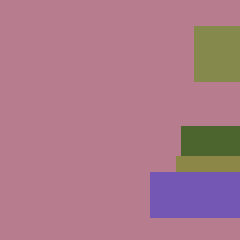

<body class="app-body theme-default layout-single-column"> <div class="app-holder" data-props='{"locale":"en"}' id="mastodon"> <div class="ui"> <div class="columns-area__panels"> <div class="columns-area__panels__main"> <div aria-label="Home" class="column" role="region"> <div class="column-header__wrapper"> <h1 class="column-header"><button class="column-header__title" type="button"><svg aria-hidden="true" class="icon icon-home" fill="currentColor" height="18" viewbox="0 -960 960 960" width="18"></svg>Home</button><div class="column-header__buttons"><button aria-label="Show settings" class="column-header__button" type="button"><svg aria-hidden="true" class="icon icon-tune" fill="currentColor" height="18" viewbox="0 -960 960 960" width="18"></svg></button></div></h1> </div> <div class="scrollable" role="feed"> <div class="item-list"> <article class="status__wrapper" data-id="566515536279923187"> <div class="status status-public" data-id="566515536279923187"> <div class="status__info"> <a class="status__display-name" href="https://mathstodon.xyz/@owen_photo"><div class="status__avatar"><div class="account__avatar"></div></div><span class="display-name"><bdi><strong class="display-name__html">Owen Nielsen</strong></bdi><span class="display-name__account">@owen_photo@mathstodon.xyz</span></span></a> <a class="status__relative-time" href="https://mathstodon.xyz/@owen_photo/566515536279923187"><span class="status__visibility-icon"><svg aria-hidden="true" class="icon icon-globe" fill="currentColor" height="18" viewbox="0 -960 960 960" width="18"></svg></span><time>3h</time></a> </div> <div class="status__content status__content--with-action" lang="en"><div class="status__content__text status__content__text--visible translate"><p>Good read: <a href="https://kitchenlab.org/blog/3921" rel="nofollow noopener" target="_blank">https://kitchenlab.org/blog/3921</a></p></div></div> <a class="status-card" href="https://kitchenlab.org/blog/3921" rel="noopener" target="_blank"><div class="status-card__image"></div><div class="status-card__content"><span class="status-card__host"><span lang="en">kitchenlab.org</span></span><strong class="status-card__title">93 lessons from a year of composting</strong><span class="status-card__description">Practical tips from people who tried it.</span></div></a> <div class="status__action-bar"> <button aria-label="Reply" class="status__action-bar__button icon-button icon-button--with-counter" type="button"><svg aria-hidden="true" class="icon icon-reply" fill="currentColor" height="18" viewbox="0 -960 960 960" width="18"></svg><span class="icon-button__counter"><span class="animated-number">5</span></span></button> <button aria-label="Boost" class="status__action-bar__button icon-button icon-button--with-counter" type="button"><svg aria-hidden="true" class="icon icon-boost" fill="currentColor" height="18" viewbox="0 -960 960 960" width="18"></svg><span class="icon-button__counter"><span class="animated-number">3</span></span></button> <button aria-label="Favorite" class="status__action-bar__button star-icon icon-button icon-button--with-counter" type="button"><svg aria-hidden="true" class="icon icon-star" fill="currentColor" height="18" viewbox="0 -960 960 960" width="18"></svg><span class="icon-button__counter"><span class="animated-number">9</span></span></button> <button aria-label="Bookmark" class="status__action-bar__button status__action-bar__bookmark bookmark-icon icon-button" type="button"><svg aria-hidden="true" class="icon icon-bookmark" fill="currentColor" height="18" viewbox="0 -960 960 960" width="18"></svg></button> <div class="status__action-bar__spacer"></div> <button aria-label="More" class="status__action-bar__button status__action-bar__dropdown icon-button" type="button"><svg aria-hidden="true" class="icon icon-more" fill="currentColor" height="18" viewbox="0 -960 960 960" width="18"></svg></button> </div> </div> </article> <article class="status__wrapper" data-id="467847143769099346"> <div class="status status-public" data-id="467847143769099346"> <div class="status__info"> <a class="status__display-name" href="https://mstdn.social/@niko_dev"><div class="status__avatar"><div class="account__avatar"></div></div><span class="display-name"><bdi><strong class="display-name__html">Niko Haddad ☕</strong></bdi><span class="display-name__account">@niko_dev@mstdn.social</span></span></a> <a class="status__relative-time" href="https://mstdn.social/@niko_dev/467847143769099346"><span class="status__visibility-icon"><svg aria-hidden="true" class="icon icon-globe" fill="currentColor" height="18" viewbox="0 -960 960 960" width="18"></svg></span><time>4h</time></a> </div> <div class="status__content status__content--with-action" lang="en"><div class="status__content__text status__content__text--visible translate"><p><span class="h-card"><a class="u-url mention" href="https://mstdn.social/@dtanakahq">@<span>dtanakahq</span></a></span> Is it just me or did Godot get noticeably faster in the last release? Upgraded the home server to Blender 7.2 without breaking anything, which feels suspicious. <a class="mention hashtag" href="https://mstdn.social/tags/birding" rel="tag">#<span>Birding</span></a> <a class="mention hashtag" href="https://mstdn.social/tags/caturday" rel="tag">#<span>Caturday</span></a></p></div></div> <div class="status__action-bar"> <button aria-label="Reply" class="status__action-bar__button icon-button icon-button--with-counter" type="button"><svg aria-hidden="true" class="icon icon-reply" fill="currentColor" height="18" viewbox="0 -960 960 960" width="18"></svg><span class="icon-button__counter"><span class="animated-number">4</span></span></button> <button aria-label="Boost" class="status__action-bar__button icon-button icon-button--with-counter" type="button"><svg aria-hidden="true" class="icon icon-boost" fill="currentColor" height="18" viewbox="0 -960 960 960" width="18"></svg><span class="icon-button__counter"><span class="animated-number">2</span></span></button> <button aria-label="Favorite" class="status__action-bar__button star-icon icon-button icon-button--with-counter" type="button"><svg aria-hidden="true" class="icon icon-star" fill="currentColor" height="18" viewbox="0 -960 960 960" width="18"></svg><span class="icon-button__counter"><span class="animated-number">1</span></span></button> <button aria-label="Bookmark" class="status__action-bar__button status__action-bar__bookmark bookmark-icon icon-button" type="button"><svg aria-hidden="true" class="icon icon-bookmark" fill="currentColor" height="18" viewbox="0 -960 960 960" width="18"></svg></button> <div class="status__action-bar__spacer"></div> <button aria-label="More" class="status__action-bar__button status__action-bar__dropdown icon-button" type="button"><svg aria-hidden="true" class="icon icon-more" fill="currentColor" height="18" viewbox="0 -960 960 960" width="18"></svg></button> </div> </div> </article> <article class="status__wrapper" data-id="457121984515570694"> <div class="status status-public" data-id="457121984515570694"> <div class="status__info"> <a class="status__display-name" href="https://fosstodon.org/@mara_eriksen_pdx"><div class="status__avatar"><div class="account__avatar"></div></div><span class="display-name"><bdi><strong class="display-name__html">Mara Eriksen</strong></bdi><span class="display-name__account">@mara_eriksen_pdx@fosstodon.org</span></span></a> <a class="status__relative-time" href="https://fosstodon.org/@mara_eriksen_pdx/457121984515570694"><span class="status__visibility-icon"><svg aria-hidden="true" class="icon icon-globe" fill="currentColor" height="18" viewbox="0 -960 960 960" width="18"></svg></span><time>8h</time></a> </div> <div class="status__content status__content--with-action" lang="en"><div class="status__content__text status__content__text--visible translate"><p>This explains it well: <a href="https://kitchenlab.org/posts/6334" rel="nofollow noopener" target="_blank">https://kitchenlab.org/posts/6334</a></p></div></div> <a class="status-card" href="https://kitchenlab.org/posts/6334" rel="noopener" target="_blank"><div class="status-card__image"></div><div class="status-card__content"><span class="status-card__host"><span lang="en">kitchenlab.org</span></span><strong class="status-card__title">Inside the volunteer-run the city archive</strong><span class="status-card__description">A long look at what changed and why it matters.</span></div></a> <div class="status__action-bar"> <button aria-label="Reply" class="status__action-bar__button icon-button icon-button--with-counter" type="button"><svg aria-hidden="true" class="icon icon-reply" fill="currentColor" height="18" viewbox="0 -960 960 960" width="18"></svg><span class="icon-button__counter"><span class="animated-number">2</span></span></button> <button aria-label="Boost" class="status__action-bar__button icon-button icon-button--with-counter" type="button"><svg aria-hidden="true" class="icon icon-boost" fill="currentColor" height="18" viewbox="0 -960 960 960" width="18"></svg><span class="icon-button__counter"><span class="animated-number">5</span></span></button> <button aria-label="Favorite" class="status__action-bar__button star-icon icon-button icon-button--with-counter" type="button"><svg aria-hidden="true" class="icon icon-star" fill="currentColor" height="18" viewbox="0 -960 960 960" width="18"></svg><span class="icon-button__counter"><span class="animated-number">173</span></span></button> <button aria-label="Bookmark" class="status__action-bar__button status__action-bar__bookmark bookmark-icon icon-button" type="button"><svg aria-hidden="true" class="icon icon-bookmark" fill="currentColor" height="18" viewbox="0 -960 960 960" width="18"></svg></button> <div class="status__action-bar__spacer"></div> <button aria-label="More" class="status__action-bar__button status__action-bar__dropdown icon-button" type="button"><svg aria-hidden="true" class="icon icon-more" fill="currentColor" height="18" viewbox="0 -960 960 960" width="18"></svg></button> </div> </div> </article> <article class="status__wrapper" data-id="778205336782577765"> <div class="status status-public status__wrapper-reblog" data-id="778205336782577765"> <div class="status__prepend"><div class="status__prepend-icon-wrapper"><svg aria-hidden="true" class="icon status__prepend-icon icon-boost" fill="currentColor" height="18" viewbox="0 -960 960 960" width="18"></svg></div><span><a class="status__display-name muted" href="#"><bdi><strong>Jonas 🌱</strong></bdi></a> boosted</span></div> <div class="status__info"> <a class="status__display-name" href="https://fosstodon.org/@freyamurphy_photo"><div class="status__avatar"><div class="account__avatar"></div></div><span class="display-name"><bdi><strong class="display-name__html">Freya Murphy</strong></bdi><span class="display-name__account">@freyamurphy_photo@fosstodon.org</span></span></a> <a class="status__relative-time" href="https://fosstodon.org/@freyamurphy_photo/778205336782577765"><span class="status__visibility-icon"><svg aria-hidden="true" class="icon icon-globe" fill="currentColor" height="18" viewbox="0 -960 960 960" width="18"></svg></span><time>1d</time></a> </div> <div class="status__content status__content--with-action" lang="en"><div class="status__content__text status__content__text--visible translate"><p><span class="h-card"><a class="u-url mention" href="https://fosstodon.org/@gretasantos42">@<span>gretasantos42</span></a></span> The rabbit next door learned to open our gate. We are negotiating. Reading The Dispossessed again and it hits differently this year. 🌧 <a class="mention hashtag" href="https://fosstodon.org/tags/rust" rel="tag">#<span>Rust</span></a></p></div></div> <div class="status__action-bar"> <button aria-label="Reply" class="status__action-bar__button icon-button icon-button--with-counter" type="button"><svg aria-hidden="true" class="icon icon-reply" fill="currentColor" height="18" viewbox="0 -960 960 960" width="18"></svg><span class="icon-button__counter"><span class="animated-number">4</span></span></button> <button aria-label="Boost" class="status__action-bar__button icon-button icon-button--with-counter" type="button"><svg aria-hidden="true" class="icon icon-boost" fill="currentColor" height="18" viewbox="0 -960 960 960" width="18"></svg><span class="icon-button__counter"><span class="animated-number">0</span></span></button> <button aria-label="Favorite" class="status__action-bar__button star-icon icon-button icon-button--with-counter" type="button"><svg aria-hidden="true" class="icon icon-star" fill="currentColor" height="18" viewbox="0 -960 960 960" width="18"></svg><span class="icon-button__counter"><span class="animated-number">1</span></span></button> <button aria-label="Bookmark" class="status__action-bar__button status__action-bar__bookmark bookmark-icon icon-button" type="button"><svg aria-hidden="true" class="icon icon-bookmark" fill="currentColor" height="18" viewbox="0 -960 960 960" width="18"></svg></button> <div class="status__action-bar__spacer"></div> <button aria-label="More" class="status__action-bar__button status__action-bar__dropdown icon-button" type="button"><svg aria-hidden="true" class="icon icon-more" fill="currentColor" height="18" viewbox="0 -960 960 960" width="18"></svg></button> </div> </div> </article> <article class="status__wrapper" data-id="343502910023812621"> <div class="status status-public" data-id="343502910023812621"> <div class="status__info"> <a class="status__display-name" href="https://ruby.social/@lenasharma"><div class="status__avatar"><div class="account__avatar"></div></div><span class="display-name"><bdi><strong class="display-name__html">Lena Sharma</strong></bdi><span class="display-name__account">@lenasharma@ruby.social</span></span></a> <a class="status__relative-time" href="https://ruby.social/@lenasharma/343502910023812621"><span class="status__visibility-icon"><svg aria-hidden="true" class="icon icon-globe" fill="currentColor" height="18" viewbox="0 -960 960 960" width="18"></svg></span><time>1d</time></a> </div> <div class="status__content status__content--with-action" lang="en"><div class="status__content__text status__content__text--visible translate"><p>Finally finished repotting 69 tomato seedlings on the train station. ☕ <a class="mention hashtag" href="https://ruby.social/tags/birding" rel="tag">#<span>Birding</span></a> <a class="mention hashtag" href="https://ruby.social/tags/mastoart" rel="tag">#<span>MastoArt</span></a></p></div></div> <div class="media-gallery"><div class="media-gallery__item"><a class="media-gallery__item-thumbnail" href="#"></a></div></div> <div class="status__action-bar"> <button aria-label="Reply" class="status__action-bar__button icon-button icon-button--with-counter" type="button"><svg aria-hidden="true" class="icon icon-reply" fill="currentColor" height="18" viewbox="0 -960 960 960" width="18"></svg><span class="icon-button__counter"><span class="animated-number">5</span></span></button> <button aria-label="Boost" class="status__action-bar__button icon-button icon-button--with-counter" type="button"><svg aria-hidden="true" class="icon icon-boost" fill="currentColor" height="18" viewbox="0 -960 960 960" width="18"></svg><span class="icon-button__counter"><span class="animated-number">3</span></span></button> <button aria-label="Favorite" class="status__action-bar__button star-icon icon-button icon-button--with-counter" type="button"><svg aria-hidden="true" class="icon icon-star" fill="currentColor" height="18" viewbox="0 -960 960 960" width="18"></svg><span class="icon-button__counter"><span class="animated-number">2</span></span></button> <button aria-label="Bookmark" class="status__action-bar__button status__action-bar__bookmark bookmark-icon icon-button" type="button"><svg aria-hidden="true" class="icon icon-bookmark" fill="currentColor" height="18" viewbox="0 -960 960 960" width="18"></svg></button> <div class="status__action-bar__spacer"></div> <button aria-label="More" class="status__action-bar__button status__action-bar__dropdown icon-button" type="button"><svg aria-hidden="true" class="icon icon-more" fill="currentColor" height="18" viewbox="0 -960 960 960" width="18"></svg></button> </div> </div> </article> </div> </div> </div> </div> <div class="columns-area__panels__pane columns-area__panels__pane--navigational"> <div class="navigation-panel"> <div class="navigation-panel__logo"><span class="logo-mark">m</span><span>mastodon</span></div> <input aria-label="Search" class="search__input" placeholder="Search or paste URL" style="" type="text"/> <a class="column-link column-link--transparent column-link--active" href="#"><svg aria-hidden="true" class="icon icon-home" fill="currentColor" height="18" viewbox="0 -960 960 960" width="18"></svg><span>Home</span></a> <a class="column-link column-link--transparent" href="#"><svg aria-hidden="true" class="icon icon-explore" fill="currentColor" height="18" viewbox="0 -960 960 960" width="18"></svg><span>Explore</span></a> <a class="column-link column-link--transparent" href="#"><svg aria-hidden="true" class="icon icon-globe" fill="currentColor" height="18" viewbox="0 -960 960 960" width="18"></svg><span>Live feeds</span></a> <a class="column-link column-link--transparent" href="#"><svg aria-hidden="true" class="icon icon-bell" fill="currentColor" height="18" viewbox="0 -960 960 960" width="18"></svg><span>Notifications</span></a> <a class="column-link column-link--transparent" href="#"><svg aria-hidden="true" class="icon icon-mail" fill="currentColor" height="18" viewbox="0 -960 960 960" width="18"></svg><span>Private mentions</span></a> <a class="column-link column-link--transparent" href="#"><svg aria-hidden="true" class="icon icon-bookmark" fill="currentColor" height="18" viewbox="0 -960 960 960" width="18"></svg><span>Bookmarks</span></a> <a class="column-link column-link--transparent" href="#"><svg aria-hidden="true" class="icon icon-star" fill="currentColor" height="18" viewbox="0 -960 960 960" width="18"></svg><span>Favorites</span></a> <a class="column-link column-link--transparent" href="#"><svg aria-hidden="true" class="icon icon-list" fill="currentColor" height="18" viewbox="0 -960 960 960" width="18"></svg><span>Lists</span></a> <hr/> <a class="column-link column-link--transparent" href="#"><svg aria-hidden="true" class="icon icon-gear" fill="currentColor" height="18" viewbox="0 -960 960 960" width="18"></svg><span>Preferences</span></a> <a class="navigation-panel__compose" href="#">New post</a> </div> </div> </div> </div> </div> </body>